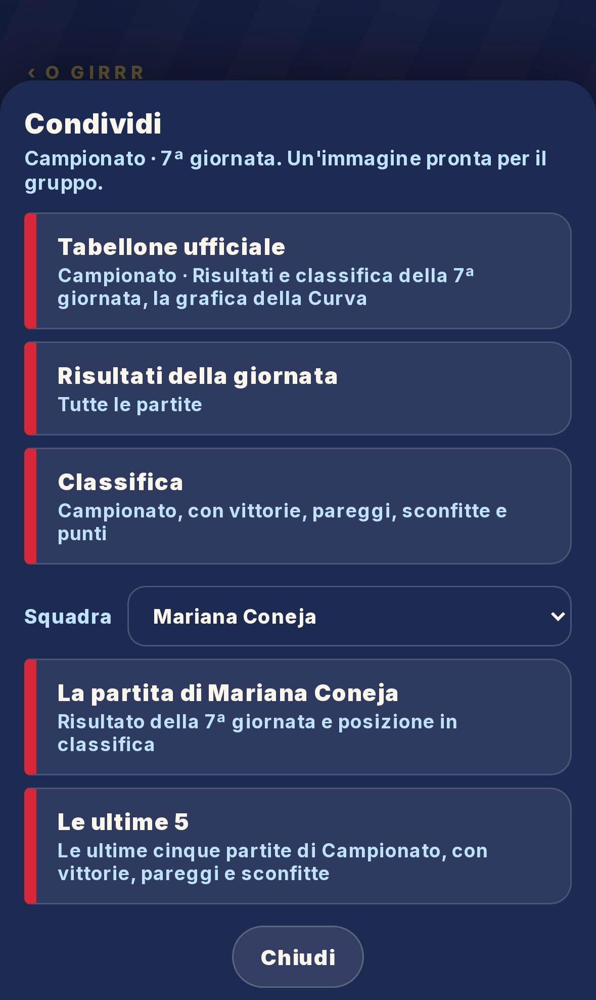
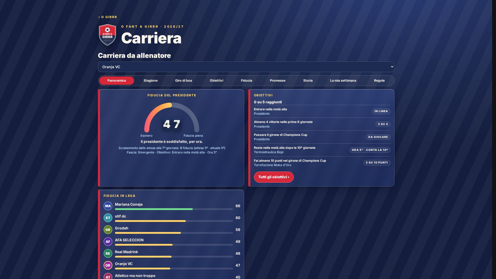
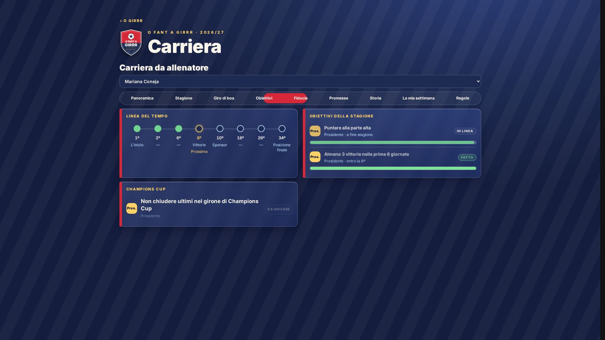

Il bilancio, alla tappa che scegli

Fino ad ora, inizio campionato, tappe ogni cinque giornate, metà e fine stagione: si sbloccano da sole con i risultati pubblicati. Scegli Campionato, Champions Cup oppure entrambi. I commenti della redazione e le citazioni reali della Curva seguono periodo, competizione e squadra; nella vista generale raccontano la situazione della lega.
Dove: Carriera → Giro di boa. Ogni squadra, anche per l’ospite.
Le foto, un album

Due foto per una competizione; tre per entrambe, con Campionato rosso e Coppa azzurra. Miglior attacco e miglior difesa mostrano anche i gol. Le foto si mandano insieme, senza testo aggiunto; sul PC si possono scaricare. I numeri tecnici restano in una parte dedicata.
Dove: Carriera → Giro di boa → Prepara le foto; oppure Tabellone → Condividi.
Il Tabellone che stai guardando

«Tabellone ufficiale» della giornata vista, in Campionato o Champions Cup. Per la squadra scelta: «La partita di…» e «Le ultime 5», anche da ospite.
Dove: Tabellone → Condividi.
Radio e video, anche da soli

«Condividi la puntata» sotto la Radio e «Condividi il video» sotto il video scelto. Il pulsante della Radio è centrato sotto il lettore audio. Il nuovo bilancio alimenta anche il segmento della Radio dopo la 17ª e la 19ª giornata.
Dove: Girrr Sport → Radio o Video.
Il tabellone della fiducia

Ogni cartellino completa la ribalta prima del successivo. Il punteggio resta fermo anche quando arrivano i dati di Carriera.
Dove: Carriera → Panoramica.
Obiettivi, dall’inizio

La linea del tempo si apre dalla 1ª giornata. Sul telefono puoi scorrere le tappe, senza il salto automatico alla prossima scadenza.
Dove: Carriera → Obiettivi.